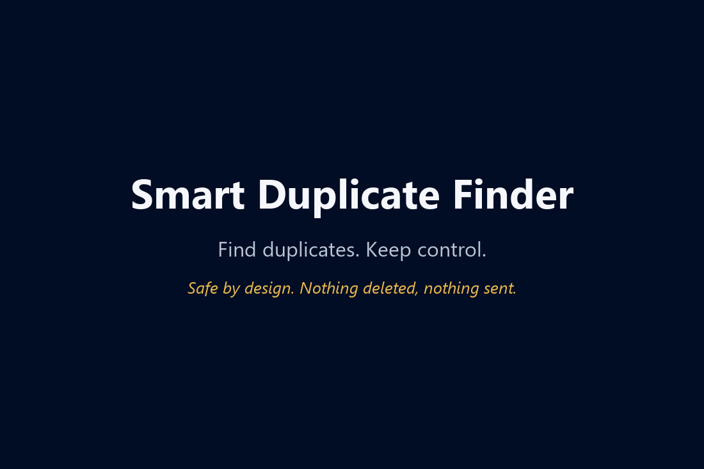
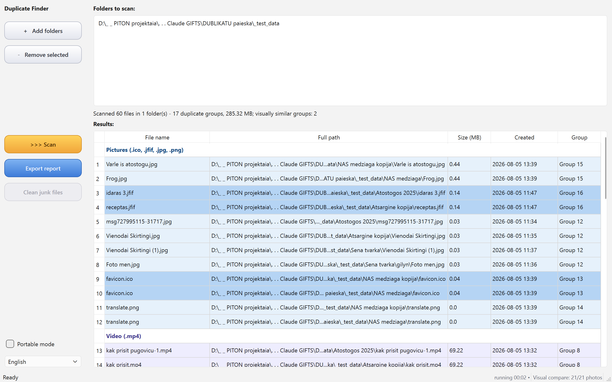
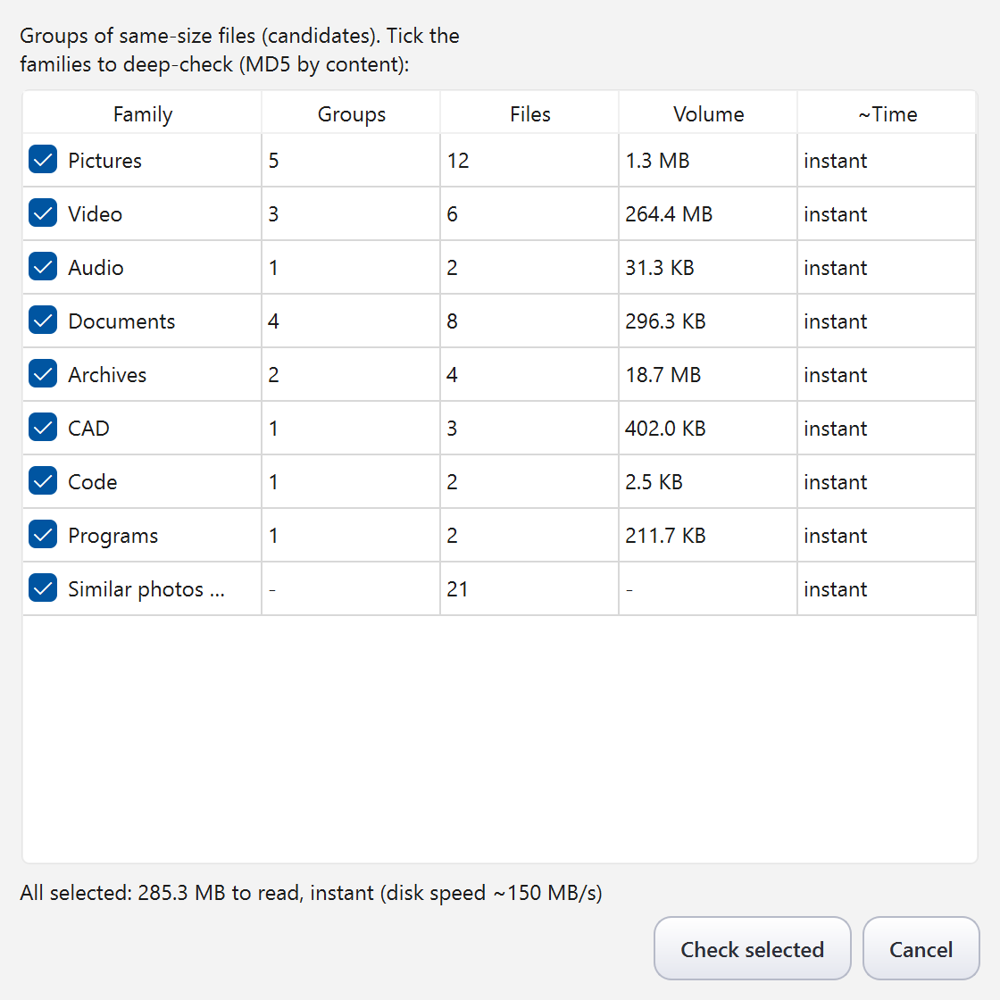
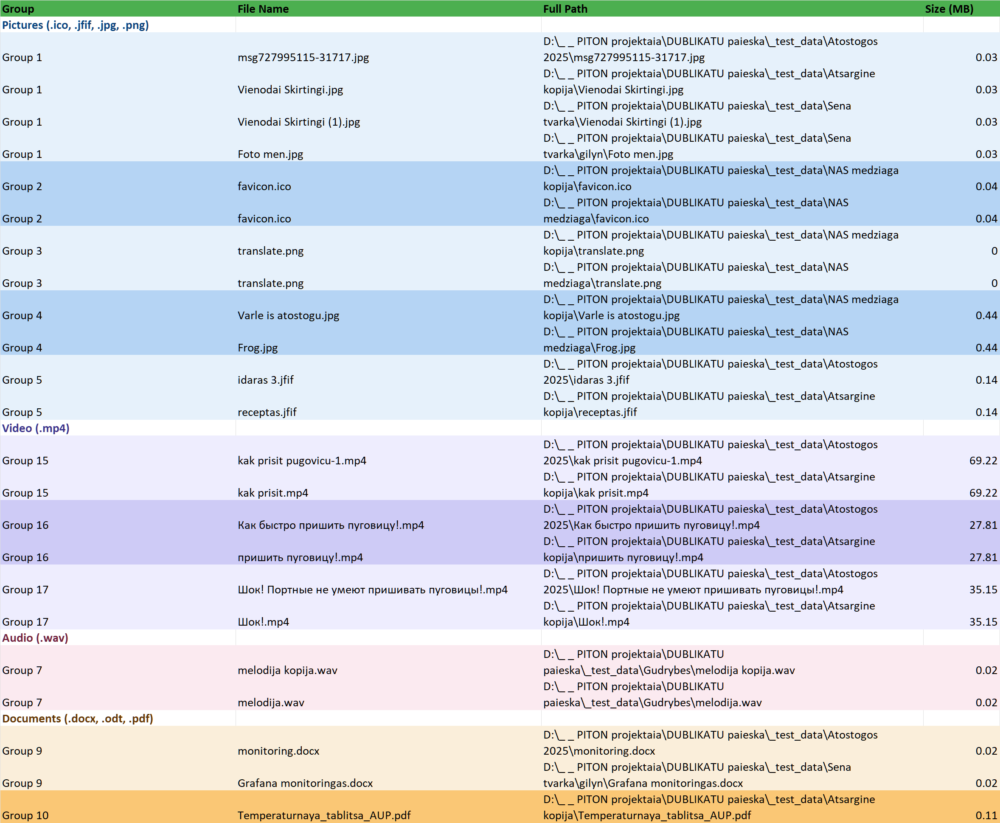

Find duplicates. Keep control.
Safe by design. Nothing deleted, nothing sent.

Finds duplicate files by content (MD5) and visually similar photos by perceptual hash — resized or re-saved copies included, iPhone HEIC and AVIF among them.
By design the program never deletes your files. It finds, groups and shows — deleting is your decision, made outside the app. Right-click a result to open the file, open its folder or copy its path — so you can lay eyes on a pair before deciding.
A candidate dialog with per-family time estimates lets you scan only what matters instead of everything blindly.
Results grouped by file family in a colour-coded Excel report, so you can clean up at your own pace.
English, Lithuanian, Russian and German in one exe. No installation required, no ads, no telemetry, no network access.
MIT license. The full source code, tests and build instructions are public on GitHub.



This program was written by Claude (an AI by Anthropic) as a gift, with live testing by Robertas — a furniture designer, not a programmer. Because the code is open, you can ask Claude about it directly: the “?” menu in the app explains how. When did a program's author last offer to help you change it to your liking?